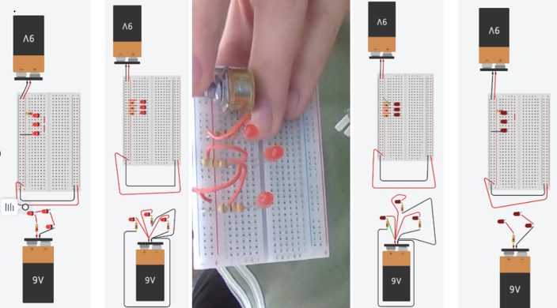
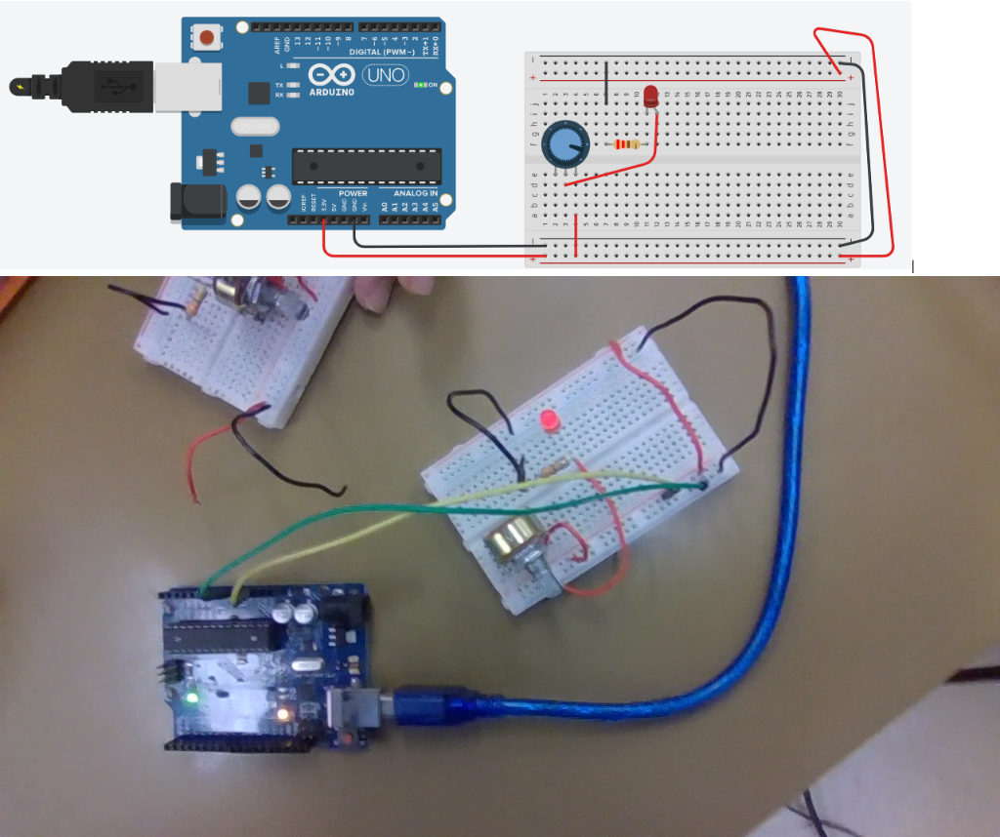
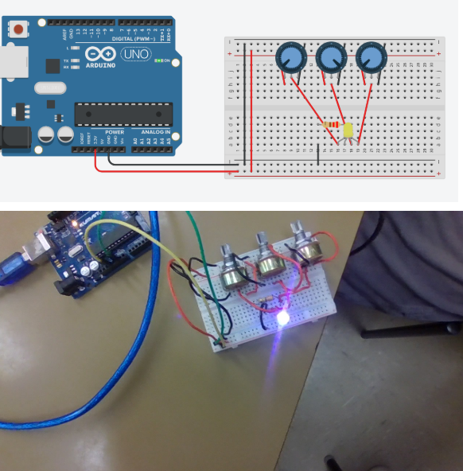
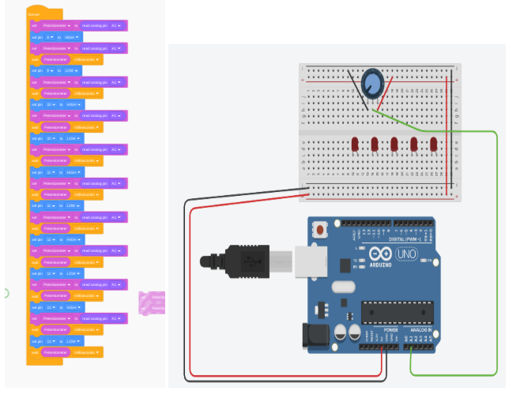

Electronics
During the electronics unit, I built circuits on Tinkercad and in real life. I also coded these circuits to do different things, such as Morse code or follow the potentiometer. Each one was called a "circuit task."
Assorted Circuits
This circuit task was just an introduction to get to know all the circuit types. I also built a parallel circuit in real life.
Dimmable LED
This circuit task was to build a circuit in which you could dim and brighten an LED by adjusting the potentiometer. I built this in real life.
RGB LED
This circuit task is where I built a circuit with three potentiometers and one RGB LED, and each potentiometer adjusts a different color. I built this circuit in real life.
Morse Code
I sadly don't have an image for this one, but this task was just coding an LED to blink something in Morse code. I used the word "skibidi."
Chaser Lights
This one was by far the hardest, where I had to code and build a circuit in which when you turned the potentiometer, the chaser lights get faster/slower.
Challenges
df